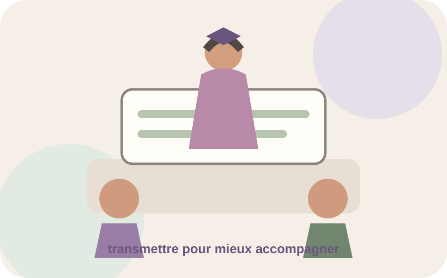

Nos actions
Agir concrètement pour les tout-petits.
À p'tits pas soutient des projets qui améliorent les soins, la place des parents et les compétences des professionnels de néonatologie.

Nos champs d'action
Des projets lisibles, un par un.
Les grands domaines sont séparés des réalisations concrètes. Chaque projet possède sa propre page.
01 · SOINS DE DÉVELOPPEMENT
Un environnement pensé pour le nouveau-né.
- Équipements de confort et de soins
- Matériel favorisant le développement et le bien-être
- Projets identifiés avec les équipes
02 · PARENTALITÉ & LIEN
Donner une vraie place aux parents.
- Espaces dédiés aux familles
- Allaitement et confort des parents
- Portage physiologique et lien parent-bébé
03 · FORMATION
Former pour mieux accompagner.
- Soins de développement
- Accompagnement à la parentalité
- Portage physiologique et lien
- Allaitement et transmission des pratiques
04 · SOLIDARITÉ
La solidarité fait vivre les projets.
Marché de Noël, Marché de printemps 2026 et autres initiatives de collecte.